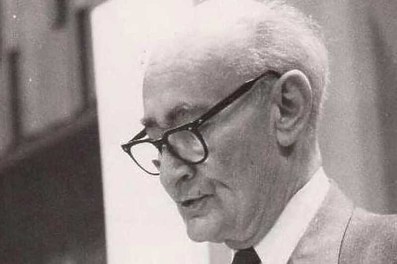

"Počeli smo priču o gradnji nuklearne elektrane u Bosni. Njemu je to bila posebno draga tema. Zagovarao je ideju i spremao dokumentaciju za gradnju nuklearne elektrane. Govorilo se o lokaciji na Drini, negdje oko Goražda (...) Očigledno ga je nuklearka jako zanimala. U njoj je vidio ne samo novi izvor energije za rastuću industriju Bosne i Hercegovine, nego i mogućnost novog tehnološkog prodora za Energoinvest. U jednom času ja sam rekao otprilike sljedeće: 'Šta vrijedi, neka nam je sada daju graditi, treba nam deset godina da je izgradimo'. On je zastao, malo se zamislio, pridigao glavu s jastuka, oslonio se na laktove, u očima mu se pojavila karakteristična odlučnost i rekao: 'Dajte meni, ja ću je napraviti za osam'", ispričao je Primorac.
U Bosanskom narodnom pozorištu Zenica danas je upriličena premijera predstave "Crvenkapica i dobri vuk" autora i reditelja Željka Miloševića (po motivima dramskog teksta "Crvenkapica i zbunjeni vuk" autora Radeta Pavelkića) u koprodukciji Dječije, omladinske i lutkarske scene Bosanskog narodnog pozorišta Zenica sa Kulturno-sportskim centrom Kakanj.
Ovo će biti četvrti i posljednji supermjesec ove godine, koji će izgledati veći i svjetliji nego obično jer će se približiti Zemlji na oko 225.000 milja (361.867 kilometara) u četvrtak. Neće dostići svoju punu fazu do petka.
U partnerstvu sa Paramount Pictures, Airbnb nudi priliku za osam sretnih korisnika da, zajedno sa svojim gostima, učestvuju u prvom događaju ove vrste – "Gladijatorskoj reviji", koja će se održati 7. i 8. maja 2025. godine.
Trend koji je sada osvojio društvene mreže zapravo je evoluirao iz popularnosti Studio Ghibli filmova i njihovog umjetničkog izraza. Specifičan vizualni jezik koji je razvio Hayao Miyazaki, osnivač studija, odlikuje se bogatstvom boja, detaljnim prikazima prirode, te neobičnim, često snolikim likovima. Ljubitelji Ghibli animacija počeli su replicirati ovaj jedinstveni stil kroz svoje vlastite radove, stvarajući umjetnost koja dočarava tu toplinu, magičnost i uzvišenost prisutnu u filmovima.
Bosanski kulturni centar Sarajevo večeras je bio ispunjen smijehom i ovacijama, zahvaljujući briljantnom nastupu Gorana Vinčića, poznatijeg kao Vinča. Svojim britkim humorom i neiscrpnom energijom, Vinčić je od prve minute osvajao publiku, a prvi red ni ovaj put nije bio pošteđen njegovih duhovitih dosjetki.
Međunarodna svemirska stanica (MSS) i svemirska odijela koja astronauti koriste prilikom šetnje u svemiru, odnosno kretanja izvan letjelice, stara su više decenija. Upravo je starost ove opreme uzrokovala nedavne tehničke probleme. - Naša svemirska odijela nisu nova, pa su određeni problemi bili očekivani - izjavio je astronaut NASA-e, Metju Dominik, na konferenciji za medije povodom misije Kru-8. Četvorka astronauta iz te misije vratila se na Zemlju 25. oktobra.
Podršku neradnoj nedjelji dalo je čak 96 posto ispitanika, odnosno 97,5 posto trgovaca, 96% zaposlenih u uslužno-trgovačkim djelatnostima, 98,5% u uslužnom sektoru te 91% zaposlenih na uredsko-šalterskim poslovima. Smatraju da slobodna nedjelja i praznici pozitivno utičun na njihov porodični život, ali i na produktivnost tokom radne sedmice te da je nedjelja najbolji dan za odmor i porodicu.
Ovo će biti četvrti i posljednji supermjesec ove godine, koji će izgledati veći i svjetliji nego obično jer će se približiti Zemlji na oko 225.000 milja (361.867 kilometara) u četvrtak. Neće dostići svoju punu fazu do petka.
Izmjene Zakona o unutrašnjoj trgovini FBiH, prema kojim je nedjelja neradna za tržne centre i trgovine u ovom entitetu, stupila su na snagu danas. Reakcije na izmjenu ovog Zakona su podijeljene u javnosti. Dok neki odobravaju promjenu, drugi joj se protive.
Bračni par Hasanagić, Vedran i Mirjana, su u srcu Baščaršije stvorili oazu mirisa. Turisti, gosti, obični prolaznici, ne mogu odoljeti a da ne svrate u malu radionicu sapuna, svijeća, parfema koji neodoljivo mirišu na djetinjstvo, život, koji mirišu na radost. Ono što je počelo iz hobija, ljubavi, postalo je obaveza.
Volkswagen je obavijestio medije kako je u Ruandi pokrenut projekt GenFarm u kojem učestvuje Volkswagen grupa. Njemački proizvođač će lokalnu zajednicu snabdijevati skuterima i traktorima na električni pogon. Izbor je pao na električne pogone jer je cilj u potpunosti zaokružiti projekt prevoza i učiniti ga nezavisnim. Tako će uz električna vozila Volkswagen obezbjediti punionice napajane električnom energijom iz solarnih panela.
Ovi traktori su rezultat rada evropskog inovacijskog centra, a u Africi će biti ponuđeni kroz pilot projekt najma. Iz Volkswagena poručuju kako se radi o "pouzdanim, održivim i ekološki prihvatljivim" poljoprivrednim vozilima. A ako se pitate kako to da je struja ovdje pobijedila, odgovor je jasan - zbog visoke cijene fosilnih goriva u Africi.
Dr Nikolaj Ardej (Nikolai Ardey), generalni direktor Volkswagen Group Innovationa, rekao je: - Poljoprivrednici mogu rezervisati e-traktor uključujući obučenog vozača za pristupačnu održivu poljoprivredu. Jedinstvena prodajna tačka projekta je korištenje sistema zamjene baterija. Tako baterija postaje dio energetske infrastrukture čvorišta, kao i skladište energije za traktor - istakao je Ardej.
Tech stručnjak Gary s MacMosta objašnjava da, u teoriji, možete koristiti bilo koji punjač koji odgovara vašem iPhoneu, pod uslovom da je priključak za punjenje kompatibilan. Ipak, iako ne morate nužno koristiti samo Appleove punjače, postoje neki faktori na koje treba obratiti pažnju. Na primjer, ako koristite punjač koji nije dovoljno snažan, vaš telefon će se puniti sporije.
Appleovi punjači ili oni koji su certificirani kao sigurni za Apple uređaje dizajnirani su za dugovječnost. Oni pružaju pouzdano punjenje, čime se smanjuje rizik od problema s punjenjem ili oštećenja uređaja. Iako su skuplji, takvi punjači imaju garanciju kvalitete i traju duže, što ih čini isplativijima na duže staze, jer nećete morati stalno ulagati u nove jeftine punjače.